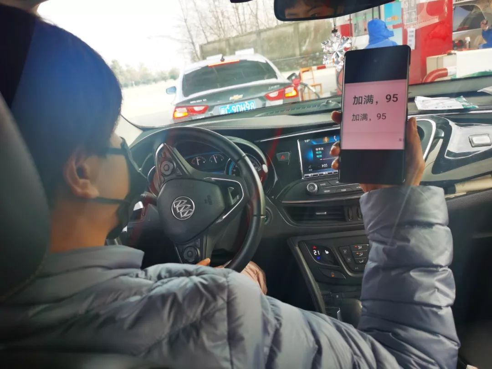
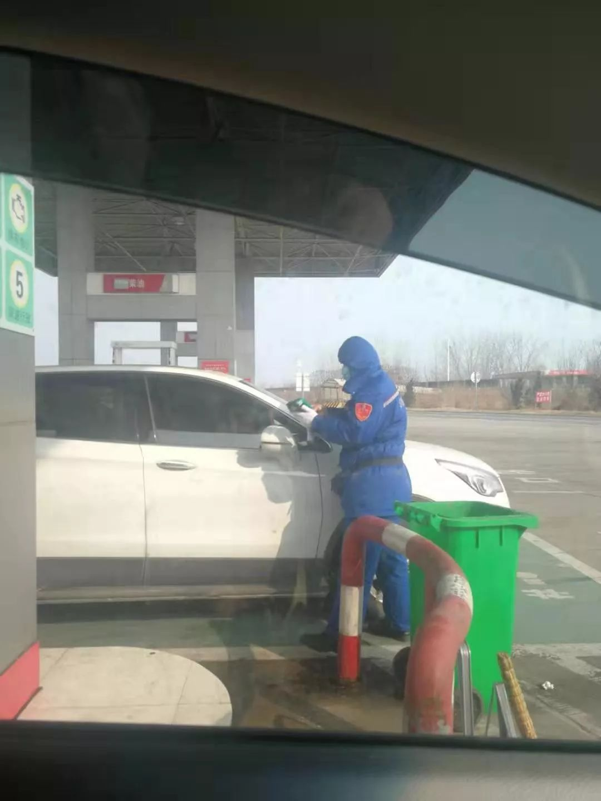

7位湖北人自述：我的“流浪”春节
原文链接 备份链接 《战疫口述记》，是燃财经在新型冠状病毒肺炎期间推出的特别栏目，记录疫情亲历者的观察和感受。本文为第3篇，查看前2篇请点击《农村这样防肺炎》《我在武汉战肺炎》。 作者 | 苏琦 金玙璠 孟亚娜 唐亚华 孔明明 魏佳 …
记者/佟晓宇
编辑/杨宝璐 宋建华

**服务区工作人员在给他们的车消毒
**
鄂A号车牌从来没有像如今一样惹眼。
1月23日，因为新型冠状病毒引起的肺炎，武汉切断对外交通。全市城市公共交通暂停运营，无特殊原因市民不得离开武汉，机场、火车站也暂时关闭。但很多人在此之前就离开了武汉，他们踏过桥路，回到家乡或者去往早就心仪已久的旅游地，猝不及防地，他们迎来了一场关于隔离与接纳的考验。
常宁一家和他们的朋友们就卡在了这个时间点前后：在钟南山院士宣布确定人传人之前，他们放心地驱车外出度假；而在疫情爆发后，他们又不得不回到武汉。在30个小时中，她不得不一再告诉自己的孩子，别人只是怕病毒，而不是怕他们。

开了30个小时的车，终于回到武汉

**最特别的除夕
**
1月28号下午5点左右，我们从龚家岭下高速，经历了30个小时的路程，终于回到武汉，到家了。
这大概是我们人生中最特别的30个小时。
1月17号，我们一家三口和妹妹一家三口，以及妹妹的闺蜜带着孩子，五个大人三个小孩，从武汉出发去长白山。我们三位女士开了一辆越野车，三人轮着开。两个爸爸就带着三个孩子，开了一辆商务车。大家想去长白山滑雪，这个计划去年就做了，双十一在网上订好了长白山的度假酒店。
出发前，我就看到网上一些消息，说武汉发现了新型肺炎，医院里面有蛮多病人，但新闻说可防可控，只是有限的人传人，社区里的人看起来也并不紧张，一切如常。我们根本想不到会这么严重，也没收到任何关于疫情的通知，所以我们出门都没想到要戴口罩。不管是在山东住酒店、在天津看“天津之眼”，还是在沈阳逛故宫，都没有任何问题，在沈阳故宫买门票，就直接拿身份证去买，当时一切如常，这些地方人都比较多。
直到21号才传来疫情变严重的消息。当时我们在沈阳，听到消息赶紧买口罩，那会儿口罩已经特别难买了，跑了四家药店，才买到两包一次性口罩。
钟南山院士的讲话我们也看了，意识到疫情比较严重，担心别人对我们从武汉来的会有想法，我们在沈阳就给长白山的度假酒店打电话，问他们，我们是武汉来的，能正常入住吗？如果不能我们就在沈阳停下，返回武汉。酒店回复我们说没问题。21号，我们顺利入住了长白山的度假酒店。
到了酒店，我们跟工作人员报备了我们的情况。酒店的服务和应急措施做得不错，安排人给我们按时测量体温，我们住的大套房，中间一个大客厅两边有床，八个人基本就在同一个房间里，中餐直接送到房间，我们还到药店买了两个体温计，每天没事干就测体温。
之前预定了三个滑雪教练，交了定金。但怕带来不必要的麻烦，我们就主动跟教练沟通，说我们是武汉来的，如果教练介意我们就不去了，当时就有两个教练害怕，不想带我们了，我们就说如果介意的话我们可以不滑，最后只剩下一个教练愿意带。后来去医务室量了体温，我们体温都正常，当时其实已经感觉到事情严重，原来大家已经这么在意了。
22号，我们跟着那个教练去滑了雪。回酒店看新闻，手机也不停的收到各种疫情相关的信息，也有朋友发信息提醒我，我们才真正意识到，疫情严重了。我们的教练也很惨，回去就被隔离。
我们赶紧跟酒店沟通，要求自行隔离，让他们把食物送到房间来，雪票也办理了延期，定在了明年。
这时，各种各样关于疫情的消息席卷而来，武汉切断对外交通的消息也是那时传来的——我们从没想过会发生这么严重的事情。我记得23号早上，除夕前一天，我们已经准备那天在房间里隔离，一个懒觉起来，睁眼就听到这样的消息。一时间，大家都蛮紧张的。觉得疫情越来越严重，当时最担心的是家里的老人，新闻说死亡率高的都是老人，于是就不停地给家里打电话，叮嘱他们戴好口罩、尽量不要出门。
因为没看到身边有真实的病例或危重的情况，家里老人还一直将信将疑。我们隔两三个小时就要打个视频电话，看一看家里，叮嘱一下老人。我们还怕老人没吃的，因为23号时，据说当天很多超市在抢购，我们叮嘱老人不要去。好在当时临近过年，家里囤了不少东西，至少两三天是够的。
这大概是我们在外面过的最特别的一个除夕。从武汉出来时，我们带了一些吃的，酒店给我们送了人参炖鸡汤，我们自己做了一顿火锅，就这么吃了团圆饭。
回去，还是留下来
之后我们不得不面对一个问题，到底是回去还是留下来？
26号，景区因为肺炎而开始政策性关闭，我们跟酒店协商，毕竟开车回去太远了，2300多公里，酒店也跟当地政府沟通，但政策不停地变。一开始，酒店说可以满足我们住到29号，但是29号以后就不能确定了。我们想住到29号，就跟旁边镇政府联系，我们当时想找个地方单独隔离，但政府回应说只能集中隔离。
25号，政府工作人员告诉我们，集中隔离的地方似乎存在疑似病例，这就没法弄了，我们更不敢去了。我们甚至报了警，警察说，这既不是治安事件，也不是纠纷，他们也没法安排。
家人和朋友都劝我们留在原地观察，先不要着急回。大家商量了很久，很纠结：回吧，武汉处在疫情大爆发时，而且路上要连续开二十多个小时，一口气开回去挺危险的；不回吧，我们带着孩子，在外面不知道会发生什么。
我们搜集了关于疫情的各种信息，打了好多电话给各行各业的朋友询问。本想去沈阳待几天看看情况，为此还讨论了很长时间，设想各种会发生的情况，制定应对预案。一直讨论到后半夜，最后大家目标一致，回。
我们原计划春节在外面过，每年也只有这个时候有假期，本来按计划我们会在28号返程，刚好初六，也要开始上班了。但一切计划都赶不上变化。
1月27日，我们上午11点多从酒店出来，直接上了高速。
我们不敢去超市补给，担心一去超市就把我们拦下来，就把爸妈的卤牛肉卤鸭翅蒸熟，带上酒店送的一箱矿泉水、3盒牛奶、一堆面包，就这样匆匆启程了。
出发前一晚，我们发现越野车的轮胎上有划痕，磨损得很厉害，就到处联系修车，带我们滑雪的教练也帮我们联系修车师傅。修理厂过年都不开门，我们就在当地找人帮忙换胎，但别人一听说我们是鄂A的车，没人愿意帮忙。27号早上，我们觉得实在不能等了，没办法，两个爸爸只能自己动手把越野车的前后轮对调了一下。
前后轮胎对调要用到两个千斤顶，我们缺一个，就找别的司机借，后来找一个出租车师傅借到了，担心师傅介意我们是武汉的，我们就花300块钱把千斤顶买了下来。
直到回到武汉了，两位爸爸才告诉我们，换胎时车子可能没有顶好，中间突然一下掉下来了，人差点就受伤。

一路上，加油都不敢摇下车窗
成为“重点关注对象”
一路上，我们体会到了什么叫重点关注对象。
我们都经历过2003年非典，因此即便遭遇了一些麻烦，大家的整体状态都比较镇定。我们加了各种微信群，也知道鄂A车牌显眼。车停在酒店楼下时，我们在楼上就能看到车，大家就坐在窗边，坐一排从窗户往下看，看外面到底会发生什么事情或者有什么变化。还好，这期间什么都没发生。
路过第一个服务区时，正好有个汽修厂开着门，我们就去加了个气。在加气的过程中，汽修厂的员工看到了车牌，就报警找来了警察。
警察很快就来了，我们登记了身份证、测量了体温。当时是晚上，我们想带着孩子到餐厅去吃个饭。但警察建议我们买出来吃，可是在北方，那么冷，东西买出来就冷了没法吃，我们也担心天气太冷孩子感冒。
当天晚上11点，我们在一个比较小的服务区找到一家拉面馆，做完常规检查后，进去吃了一口热腾腾的牛肉面，虽然只有三片牛肉，但还是忍不住热泪盈眶，就像做了错事一样，偷偷摸摸不能让别人知道我们是武汉人，孩子们都很懂事，不说话，就埋头吃。
路上我们加了几个滞留在外地的武汉人的回乡群，大家都挺惨的。我们也在群里帮大家想办法。每看到群里有人“说我到家了，我到武汉了”，大家都会很激动，算是对彼此的一种鼓励。
大概到晚上12点时，大家都很困，从山东往天津走，雾霾特别厉害，路很黑，异常难走，我们心里都很害怕。走到半夜两点左右想休息一下，就找了服务区，保安过来，我们配合登记、测量体温。我们跟保安说就在车上睡觉，休息一下，但到了四点多，工作人员来把我们叫醒，说服务区领导要来检查，如果看到你们武汉来的会比较麻烦，你们赶快走吧。
我们就把小朋友都叫起来，上个卫生间，赶紧走了。
在高速路上面的各个休息区时，有两三次都是，工作人员一看到是鄂A牌照就会说话很凶，语气里带着脾气。我们也想着，大过年的，还要做这些工作，一定很烦躁。所以我觉得能理解，就调整自己的心态，好好跟人家讲。服务区有任何的要求，我们都配合，其实沟通过后，大家态度就都缓和了。
其实在回程出发前，并没有特别的感觉，只觉得回去可能路上会比较辛苦，小孩子路上挺听话的，一直都很配合，但是能够感受到他们的恐惧。一路上，我们必须把车停得离服务区很远，去卫生间要赶快跑着去，因为担心被别人看见，就不让我们进去了；吃饭时，也会告诉孩子们吃饭不要说话，赶快吃。既担心孩子们接触到其他人，会互相传染，也担心别人知道我们是武汉人把我们赶走。
孩子们问过，他为什么不能让别人知道我们是武汉人，为什么他们要这样对武汉人？我就告诉他们，我们的城市病了，大家会有点害怕，但还是会帮助我们。这是我们的家，不论她变成什么样子，我们都还是爱她的，所以我们要回家。
孩子这样问的时候，我觉得挺无辜、挺委屈的，其实不应该因为我们是鄂A牌照就这样对待我们，并不是鄂A牌照的车就是感染病毒了，路上跑的别的车就能确认是安全的吗？就不应该用这种方式去划分，只是因为我们是武汉人的身份，就被排斥、被歧视。不应该是这样的，我们一起对抗的是病毒，而不是武汉人。
但我们不会跟孩子讲歧视与否的话题，对于孩子来说，我希望他们看到好的一面，必须得告诉他们一些正面的东西，这种不好的感受对小孩子打击挺大的。孩子也问过，我们没有病，为什么不能好好滑雪？好在同行的有两位老师，一路上跟孩子讲解为什么会发生这样的事情，我们自我隔离，不乱走，是为了自己的安全，是对自己、他人和社会负责。

**高速路口进行检查
**
**共同的敌人是病毒
**
28日上午九点四十，当天到了第一个服务区，孩子们喊着饿了，我们就进休息区觅食。小孩子要去上厕所，走到一半就被服务区的一个大叔凶回来了，特别大声跟我们说，“干什么？不准去，站住站住！”
小孩吓了一跳。
其实我们一路上都有心理准备，在每个服务区，如果让我们上卫生间我们就去，让我们吃饭我们就吃，如果不让我们去，我们就赶紧走，加油也是这样的。但被这样吼，我们大人都吓到了，当时就有些慌和害怕，也很心疼孩子。
我们就去跟他沟通，我觉得即使当下有情绪，也不应该表现出来，如果一旦控制不好情绪的话，可能就会起冲突。我觉得在这个时间节点上，愤怒或者委屈这些情绪于事无补，最重要的是解决问题，顺利回家。跟他好好说了之后，人家就没说什么了，他让我们登个记，就放我们进去吃早餐了。
加油的时候，因为看到了我们的车牌，工作人员连车窗都不让我们打开，也不让我们下车。把油加满了，付钱时候把手机二维码放在玻璃上，他来扫，一直没有任何沟通。
我是做医药行业，跟医生打交道比较多，整个回程过程中我们也很注意，很多人可能不太了解这个疾病或者防护的过程，多多少少会有一些恐慌，但可怕的是他们只是对你排斥，自己却并不做任何的防护。
我们也做好了其他准备，提前联系辽宁的朋友准备住处，但最后决定一直开回武汉。我们一路还算顺利，从长白山上了高速之后，一直到武汉才下高速，中间没有下高速，因为一旦下了高速就很麻烦，怕被拦截。
回到武汉境内，下了高速后，有一台警车要求所有车辆都要在那里登记，测体温，他们让我们不要慌张，还嘱咐我们生活上有什么困难要找社区。
一进城，我们三个妈妈情绪一下子就崩了，哭得挺厉害。这一路上也有过紧张、害怕，大家本来都做好了发生各种情况的心理准备，有时心里面挺难过的，但路上我们任何一个人都不敢释放这种情绪，担心会影响到别的人，所以大家一路上还是正能量，互相鼓励互相逗乐。
下车后小孩子们很开心，一蹦老高。分手前，我们给三个孩子拍了几张照片，然后挨个把大家各自送回家，一个个道别。分别时我们抱在一起，就像是刚刚一起经历过一场生死一样。
这几天大家学会了调侃，说武汉人现在出名了，鄂A的车牌全国人民都知道了，每次看到这些，我都觉得很心酸，大家共同的敌人是病毒，而不是对方。
（为保护个人隐私，文中常宁为化名）
【反侵权公告】本文由北京青年报与今日头条联合出品，未经授权，不得转载。


一个高铁“密切接触者”的自白：他就坐我旁边，没摘过口罩 | 深度报道

我与“新型冠状病毒”搏斗的22天 | 深度报道
一个武汉红十字会志愿者的自述 | 深度报道


原文链接 备份链接 《战疫口述记》，是燃财经在新型冠状病毒肺炎期间推出的特别栏目，记录疫情亲历者的观察和感受。本文为第3篇，查看前2篇请点击《农村这样防肺炎》《我在武汉战肺炎》。 作者 | 苏琦 金玙璠 孟亚娜 唐亚华 孔明明 魏佳 …
原文链接 备份链接 *************▲************* 四川省巴中市巴州区，一辆鄂A车牌（武汉）轿车的车窗上，贴着红岩社区加盖公章的证明，称车主无感冒发烧现象，且正在家自行隔离。 （杜茂林/图） 全文共*4201*字， …
原文链接 备份链接 据相关数据统计，春节前，有近500万人离开武汉，他们中有近30%的人离开湖北，他们或出差、或进行计划许久的旅行，或回家过年，但伴随着疫情的加剧，他们成了一群「不被欢迎的人」。 一位武汉的小学老师已经连续三年去厦门过年， …
原文链接 备份链接 这段时间，除了关于疫情本身的讨论，一些新的话题不断加入。单读征文今天的来信，来自一位选择离开家乡的武汉人。武汉人在外省的处境令人堪忧，从直面病毒的恐慌，到遭遇歧视的愤懑，武汉人不仅是这场疫情中最直接的受害者，还成为后续 …
原文链接 备份链接 2020年1月23日，在封闭了所有离汉通道之后，武汉这座常驻人口1100万的城市彻底成为了“封闭”的孤城。 在这之后，湖北省诸多城市陆续封城，到1月26日，湖北省绝大部分城市进入了封城状态。外来的人无法回到湖北，湖北人 …